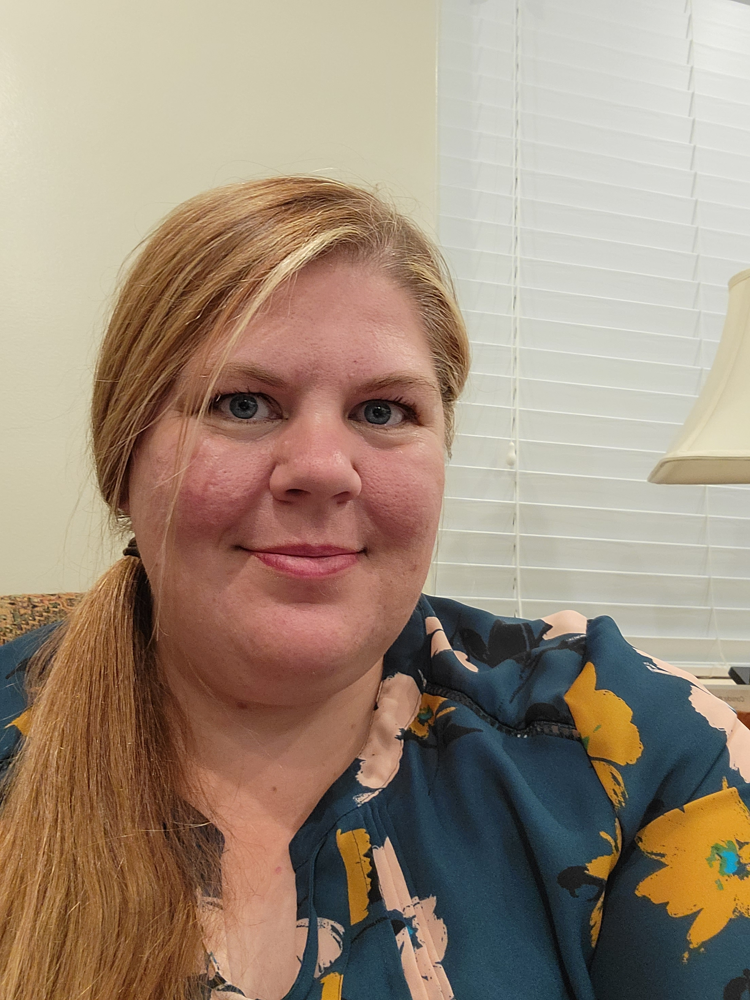

About Me
I am a mother of two. After raising my family I am now working on building my own career. I love photography, writing, spending time with family, enjoying nature, and Tai Chi. I enjoy working with others and finding ways to connect. I delight in serving my community through my church and in other ways.
I have been captivated by the endless potential of communicating a clear and concise message for businesses. Now is the time to "Let Your Message Shine."
La-draw
3173 S 200 E
Bountiful, UT 84010
801-928-4487
Bountiful, UT 84010
801-928-4487